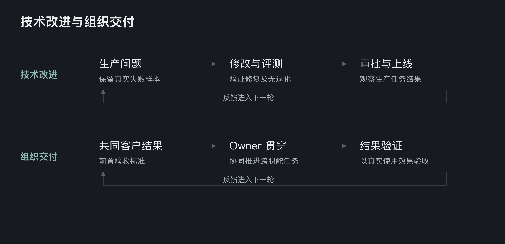
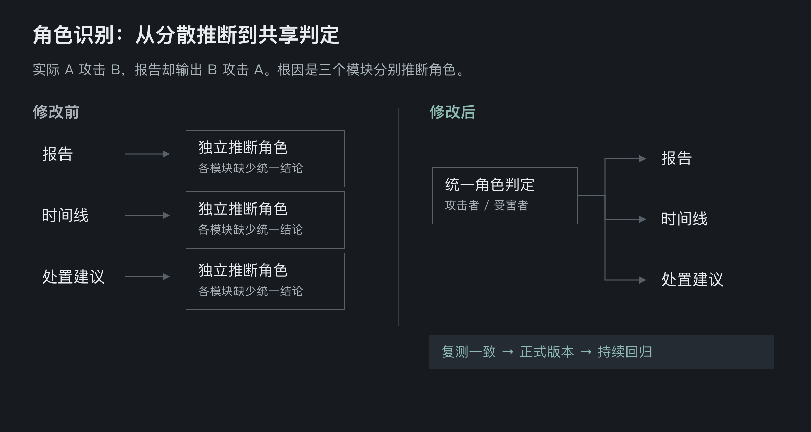
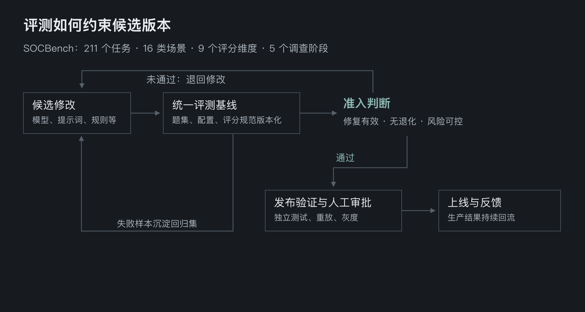
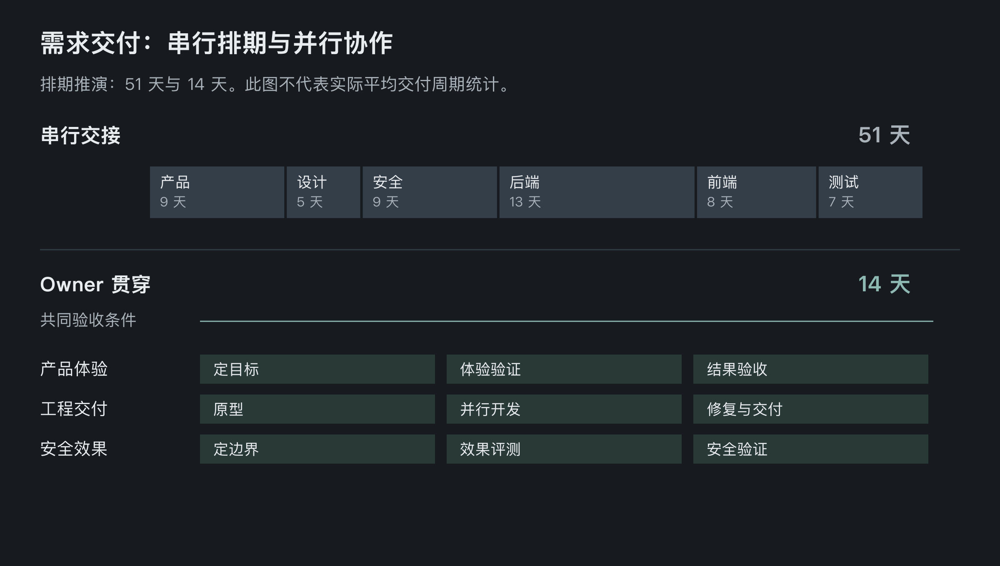

从评测驱动到端到端交付：AI Agent 安全产品研发提效实践¶
一、AI Agent 产品研发的效能瓶颈在哪里？¶
AI Agent 产品进入生产环境后，研发面对的是持续变化的任务、数据和执行路径。一次模型升级、提示词调整或工具修改，可能解决当前问题，也可能影响其他场景。如何证明修改有效、如何避免重复返工，成为交付过程中的关键问题。
Agentic SOC 是以多 Agent 协作为核心的安全运营产品，将多云、多安全产品的分散告警归并为可调查、可处置的安全事件，覆盖告警研判、调查响应、威胁狩猎和运营闭环。真实生产中的失败、用户纠偏和任务结果，为研发持续提供改进输入。
这些输入也暴露出两类瓶颈：技术侧缺少稳定的验证机制时，团队难以判断能力是否真正改善；组织侧按岗位分段交付时，目标需要多次解释，变更需要经历排期、交接与集中验收。单个任务执行加快后，等待与协调便成为更突出的约束。
因此，提效需要同时打通两条链路：将生产问题转化为可验证的能力改进，将跨职能工作贯通为共同客户结果。前者减少试错与返工，后者缩短等待与交接。

二、从一次缺陷修复，到可持续复用的研发资产¶
一个典型问题是攻击者与受害者识别反转：实际情况是 A 攻击 B，报告却输出 B 攻击 A。这类错误会影响调查结论，甚至影响后续处置方向，不能仅通过修改报告措辞解决。
定位发现，报告、时间线和处置建议三个模块分别推断角色，缺少共享判定。各模块都可能给出看似合理的解释，但组合起来却产生矛盾。根因在于角色语义没有被统一表达和复用。
实际改造是生成统一的攻击者、受害者及判定结果字段，再由三个模块读取。这样，研发将分散推断转化为共享的结构化结果，使修复对象从单份报告扩展到模块间的一致性。
修改后重跑原任务，确认 A 为攻击者、B 为受害者，报告、时间线和处置建议保持一致。角色字段与读取逻辑进入正式版本，原缺陷样本则纳入评测基线，在后续模型、提示词和规则变更时持续复测。
这一过程形成两类资产：共享字段承载明确的业务语义，回归样本保存曾经失败的条件。下一次迭代时，团队可以复用判断标准，更早发现同类退化，降低重复定位与重复修复的成本。
对研发团队而言，缺陷处理的终点由“当前输出正确”延伸为“正确行为可以持续验证”。生产经验由此进入工程体系，而不再只保留在处理人的记忆中。

三、评测驱动研发：明确每次迭代的方向与完成标准¶
建立可比较、可复现的评测基线¶
Agent 的任务结果通常包含多个环节。最终报告看似完整，不代表入口判断、证据关联和影响范围都正确。有效的评测需要同时观察结果质量、执行过程和分项能力，将笼统的“效果不好”拆解为可定位的问题。
Agentic SOC 使用 SOCBench 构建版本化基线，包含 211 个真实调查任务，覆盖 16 类任务场景、9 个评分维度和 5 个调查阶段。题集按照生产中的发生频率与风险设计，既覆盖常见攻击，也保留低频高风险任务，并纳入 12 道安全测试与环境噪声题，检查授权行为是否被误判为攻击。
长链任务按环境定位、入口确认、主链还原、影响扩展和调查结论累计评分。题集、执行配置与评分规范统一版本化，使候选变更在明确条件下比较，避免测试条件变化干扰版本判断。
将评测反馈接入修改与发布流程¶
评测承担三个连续职责：定位弱项、验证改进、持续回归。失败样本帮助研发确定修改方向；候选版本需要证明原问题已修复，并检查约定范围内是否出现退化；新发现的失败继续进入回归集。
发布前进一步结合缺陷复测、独立测试集评估、生产任务重放和灰度验证。通过评测意味着形成候选版本，最终上线仍需依据评测证据与风险进行人工审批。
评测体系对研发效能的直接价值，是缩短“提出修改—确认有效”的反馈周期。团队可以依据具体能力缺口分配投入，提前识别退化，并复用验证过程。评测本身需要维护，其收益来自后续迭代中持续减少的不确定性与重复工作。

四、受控自主：扩大 Agent 可承担的研发任务范围¶
当任务目标和完成条件可以明确描述时，Agent 能承担更多分析、修改与验证工作。但自主推进需要边界，否则偏离目标或无效重试会消耗更多研发时间。
目标边界规定要解决的问题、优先级、输入范围与预期产物；质量边界要求原问题复测通过、约定范围不退化，证据不足时不能输出确定结论；权限边界限定可访问的数据、工具与环境，并要求生产变化可追踪、可回滚；停止边界规定异常、无法可靠判断时转交人工。
四类边界把口头委派转化为可执行约束。标准明确、可评测、可回滚的任务，可以由 Agent 在授权范围内推进；高风险、高歧义及不可逆任务，需要专业人员主导。
人机协作由此从辅助执行，逐步发展到单步自主，再到边界内完成分析、修改与验证闭环。提效来自减少逐步人工操作，将专家注意力集中到关键判断。目标、质量标准和最终生效权仍由人定义，自主范围应随验证能力同步扩大。
五、重构交付协作：让技术提效转化为需求周期缩短¶
Agent 侧形成任务闭环之后，产品交付仍可能停留在串行协作中：产品完成需求，设计完成交互，安全明确口径，前后端分别实现，测试最后集中验收。每个岗位都有局部完成标准，最终结果却要等到链路末端才能验证。
缩短链路需要重建四项机制。首先，统一客户结果，让功能效果、真实使用与业务价值成为共同目标。其次，前置结果标准，使各职能开工前就使用一致的指标与证据口径。再次，指定一个 Owner，从问题定义负责到结果验证，协调依赖并调度 Agent。最后，领域专家按风险介入，在关键节点把关。
在这一机制下，产品体验、工程交付与安全效果能够围绕同一组验收条件并行推进。产品判断通过可运行原型尽早验证，安全口径在设计与实现阶段进入系统，工程实现持续接受效果反馈。偏差更早暴露，末端集中联调与返工的压力随之降低。
岗位职责也随之扩展。产品经理开始交付部分前端和可运行原型；安全工程师参与产品设计与工程实现，把领域经验转化为可评测能力；研发工程师完成前后端闭环，并向前理解客户需求、产品路线和商业影响。Agent 为这些职责扩展提供执行支持。
职责扩展仍需遵循风险分工。跨领域且风险可控的任务，可由 Owner 借助 Agent 完成；高风险、高不确定性任务仍由专家主导。组织优化的重点是减少无必要的交接，同时让专业判断及时进入流程。
相应地，团队需要增强问题结构化、AI 任务编排、端到端工程交付和业务价值判断能力。衡量个人贡献时，也逐步关注可运行结果与客户效果，使责任范围、执行能力和评价标准相互匹配。

六、总结¶
AI Agent 产品研发的持续提效，需要将真实问题、工程改进和客户结果连接起来。生产中的失败与用户纠偏提供改进方向，统一评测提供判断依据，贯穿全程的责任机制则推动改进完成交付。三者共同决定了团队能否将更快的执行速度转化为更短的交付周期。
在技术层面，应把一次问题处理沉淀为可复用的产品能力与验证资产。共享业务语义减少模块间的重复推断，版本化评测使候选变更可比较、可复测，失败样本持续参与回归，让后续迭代能够复用已有经验。质量、调用成本与执行耗时共同构成优化依据，帮助团队减少无效试错和重复返工。
在执行层面，目标、质量、权限和停止条件为 Agent 自主工作提供边界。标准明确、可评测、可回滚的任务可以连续推进，专业人员则集中处理高风险和高不确定性判断。自主范围的扩大，需要与验证能力和风险控制能力同步。
在组织层面，共同客户结果、前置验收标准和端到端 Owner 将跨职能工作贯通起来。产品体验、工程交付与安全效果围绕同一结果协同推进，使偏差更早暴露，减少排队、交接和末端返工。岗位职责随之扩展，团队也需要同步增强 AI 调度、工程交付与业务判断能力。
Agentic SOC 的实践表明，技术闭环与组织协作需要共同演进。研发效能的长期来源，是让每次失败积累为下一次迭代的验证依据，让每次交付沉淀为团队可复用的能力，并持续以真实客户结果检验这些改进的价值。